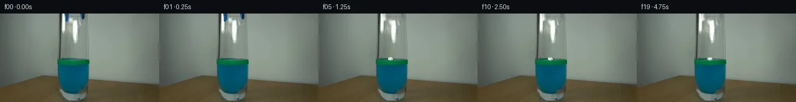
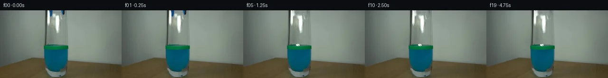
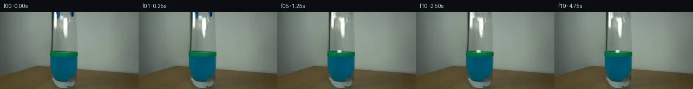
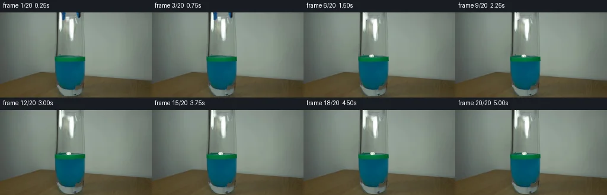
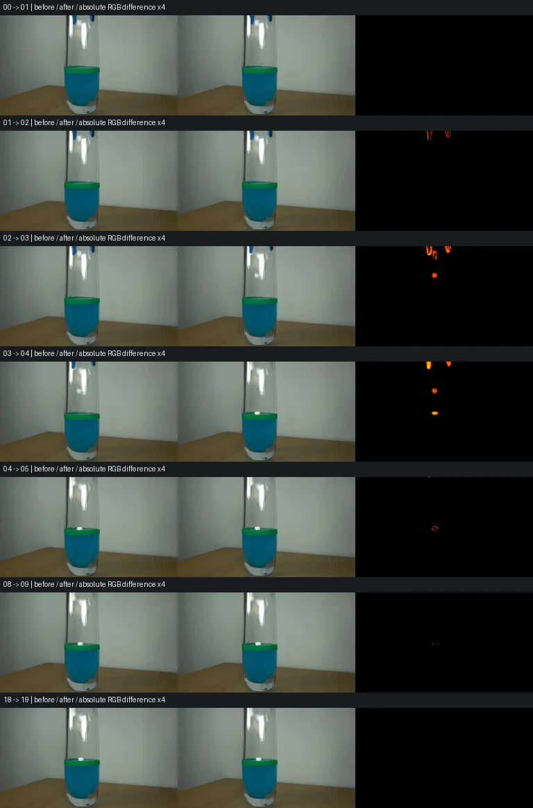

V0 · 初版
2026-11-05T15:37:22.379726+00:00 · RGB 9df28c858abb
![]()
Observable Generation Trace
把最终像素视频、Harness 冻结的每轮候选、真实工具事件和 Agent 自述放在同一页。可观测证据与模型自述分开标记，避免把“模型说它检查过”误当成真实工具调用。
![首帧]()
Static locked-off single-shot with fixed frame throughout filmed with constant framerate in real-time. The scene shows a realistic scientific demonstration. The scene only contains the described setup and actions. The blue-black grabber tool was holding the small crumpled piece of paper at the inner rim of the glass containing the blue liquid and the green water level marking. The blue-black grabber releases the small crumpled piece of paper into the glass containing blue liquid with a green band marking the water level.
首帧显示在左侧播放器初始画面。Track 权限、隔离和 tensor 一致性来自 run manifest，而不是 METHOD.md。
默认勾选初版和最终版；可选其他版本一起同步播放。仅检查图更新的连续重复快照已合并，回退旧视频仍保留为一次修订。
Observable events
来源：events.jsonl + run manifest
此 Track 禁止读取输出图片。逐轮预览由外部 Harness 自动冻结，只用于事后审计，生成 Agent 当时看不到这些页面。
Frozen candidates
每张图来自该 round 的真实 00 / 01 / 05 / 10 / 19 帧

pixels 3f460bc924ced6cf · code 0e7e341b06153f40
--- previous/generate.py
+++ current/generate.py
@@ -0,0 +1,276 @@
+"""Local pixel continuation of the provided still; no external generative assets."""
+from pathlib import Path
+import hashlib
+import json
+import math
+import shutil
+
+import cv2
+import numpy as np
+from PIL import Image, ImageDraw
+from scipy.ndimage import gaussian_filter
+
+from artifact_io import save
+
+ROOT = Path(__file__).resolve().parent
+H, W, FPS, N = 144, 256, 4, 20
+SOURCE = np.asarray(Image.open(ROOT / 'first_frame.png').convert('RGB'))
+assert SOURCE.shape == (H, W, 3)
+YY, XX = np.mgrid[:H, :W].astype(np.float32)
+
+
+def polygon_mask(points):
+ a = np.zeros((H, W), np.uint8)
+ cv2.fillPoly(a, [np.asarray(points, np.int32)], 255)
+ return a
+
+
+# Masks are constructed here from the single source, not supplied reference masks.
+LEFT = polygon_mask([(104, 0), (110, 0), (111, 8), (110, 11),
+ (108, 13), (105, 12), (104, 9)])
+RIGHT = polygon_mask([(128, 0), (135, 0), (135, 7), (134, 10),
+ (131, 11), (129, 8)])
+PAPER = polygon_mask([(110, 5), (116, 5), (118, 8), (117, 14),
+ (116, 18), (111, 17), (109, 13), (109, 8)])
+REMOVE = np.maximum(np.maximum(LEFT, RIGHT), PAPER)
+# Restore only occupied pixels. This retains source lens shading, background,
+# the long central highlight, the table, the glass edges and the green band.
+BACKGROUND = cv2.inpaint(SOURCE, REMOVE, 4, cv2.INPAINT_TELEA)
+BACKGROUND[REMOVE == 0] = SOURCE[REMOVE == 0]
+BG = BACKGROUND.astype(np.float32)
+
+
+def layer_from_source(mask):
+ """Premultiplied source RGB with subpixel edge coverage."""
+ alpha = gaussian_filter(mask.astype(np.float32) / 255, 0.32)
+ return SOURCE.astype(np.float32) * alpha[..., None], alpha
+
+
+LAYER_LEFT = layer_from_source(LEFT)
+LAYER_RIGHT = layer_from_source(RIGHT)
+
+
+def translated_layer(frame, layer, dx, dy):
+ rgb, alpha = layer
+ mat = np.asarray([[1, 0, dx], [0, 1, dy]], np.float32)
+ warped_rgb = cv2.warpAffine(rgb, mat, (W, H), flags=cv2.INTER_LINEAR)
+ warped_alpha = cv2.warpAffine(alpha, mat, (W, H), flags=cv2.INTER_LINEAR)
+ return frame * (1 - warped_alpha[..., None]) + warped_rgb
+
+
+# Small crumpled paper: source-sized irregular silhouette, facet shading,
+# soft camera filtering, and high-frequency texture sampled from the still.
+S = 6
+SIDE = 20
+sprite = Image.new('RGBA', (SIDE*S, SIDE*S), (0, 0, 0, 0))
+draw = ImageDraw.Draw(sprite)
+origin = np.array([10.0, 10.0])
+
+def points(coords):
+ return [tuple((origin + np.asarray(c)) * S) for c in coords]
+
+
+outline = [(-4.25, -.5), (-3.35, -2.0), (-1.5, -3.0),
+ (.2, -2.5), (1.9, -2.8), (3.7, -1.1),
+ (4.0, .6), (2.9, 2.4), (1.1, 2.8),
+ (-.6, 2.35), (-2.8, 2.1), (-3.8, .9)]
+draw.polygon(points(outline), fill=(214, 222, 207, 255))
+facets = [([(-4.25,-.5),(-3.35,-2),(-1.5,-3),(-1.0,-.5)], (233,239,225)),
+ ([(-1.5,-3),(.2,-2.5),(1.9,-2.8),(.3,-.1),(-1,-.5)], (245,248,238)),
+ ([(1.9,-2.8),(3.7,-1.1),(4,.6),(.3,-.1)], (214,225,205)),
+ ([(-4.25,-.5),(-1,-.5),(-2.8,2.1),(-3.8,.9)], (180,195,175)),
+ ([(-1,-.5),(.3,-.1),(1.1,2.8),(-.6,2.35),(-2.8,2.1)], (222,229,213)),
+ ([(.3,-.1),(4,.6),(2.9,2.4),(1.1,2.8)], (189,204,185)),
+ ([(-2.8,2.1),(-1,-.5),(-.1,.5),(-.6,2.35)], (241,245,232))]
+for coords, color in facets:
+ draw.polygon(points(coords), fill=(*color, 255))
+for a,b,c in [((-1.4,-2.6),(-1,-.4),(155,175,149,170)),
… diff truncated; 189 more lines …
pixels abbb9386841472ed · code 55960ab7334ee55b
--- previous/generate.py
+++ current/generate.py
@@ -4,6 +4,11 @@
import json
import math
import shutil
+import sys
+import base64
+import re
+
+sys.dont_write_bytecode = True
import cv2
import numpy as np
@@ -96,8 +101,8 @@
SPRITE[..., :3] = np.clip(SPRITE[..., :3] + texture[..., None]/800, 0, 1)
SPRITE[..., 3] = gaussian_filter(SPRITE[..., 3], .9)
-RELEASE = .42
-G = 800.0 # screen px/s^2, equivalent to a roughly 13-cm fall.
+RELEASE = .67
+G = 9800.0 # screen px/s^2; assumed local scale 1000 px/m, g = 9.8 m/s^2.
START_X, START_Y = 113.6, 10.5
CONTACT_Y = 73.8
IMPACT = RELEASE + math.sqrt(2*(CONTACT_Y-START_Y)/G)
@@ -131,8 +136,8 @@
c, s = math.cos(radians)/S, math.sin(radians)/S
transform = np.asarray([[c,-s,cx-c*10*S+s*10*S],
[s,c,cy-s*10*S-c*10*S]], np.float32)
- # Exposure integration: five positions over an approximately 1/100-s shutter.
- offsets = np.linspace(-.005,.005,5) if phase == 'fall' else [0]
+ # Exposure integration: five positions over an approximately 1/200-s shutter.
+ offsets = np.linspace(-.0025,.0025,5) if phase == 'fall' else [0]
rgbs, alphas = [], []
for dt in offsets:
mat = transform.copy()
@@ -179,10 +184,16 @@
'phase':'held','angle_deg':0,'ripple_strength':0}]
for n in range(1,N):
t = n/FPS
+ if t < .42:
+ frames.append(SOURCE.copy())
+ metadata.append({'frame':n,'time_s':t,'paper_x':START_X,
+ 'paper_y':START_Y,'phase':'held','angle_deg':0.,
+ 'ripple_strength':0.})
+ continue
frame = BG.copy()
# Opening and a short upward withdrawal, wholly inside the original crop.
- separation = min(1.65, t*4)
- rise = max(0,(t-.30)*22)
+ separation = min(1.65, max(0,(t-.42)*6.0))
+ rise = max(0,(t-.68)*42)
frame = translated_layer(frame,LAYER_LEFT,-separation,-rise)
frame = translated_layer(frame,LAYER_RIGHT,separation,-rise)
cx,cy,angle,phase,velocity,age = state(t)
@@ -235,6 +246,25 @@
assert png.shape == (H,W,3) and np.array_equal(png,unpacked)
all_exact &= np.array_equal(png,frames[n])
assert all_exact and np.array_equal(frames[0],SOURCE)
+# Decode the actual standalone player's packets, independently of its JavaScript.
+html = (ROOT/'index.html').read_text()
+data = json.loads(re.search(r'const DATA=(.*?);\nfunction unpack',html).group(1))
+def decode_packet(s):
+ return np.frombuffer(base64.b64decode(s),dtype='<u4')
+player_frame = decode_packet(data['first']).copy()
+assert np.array_equal(player_frame,tensor[...,0].reshape(-1))
+assert len(data['deltas']) == 19
+for n,encoded in enumerate(data['deltas'],1):
+ packet = decode_packet(encoded)
+ j = 0
+ while j < len(packet):
+ start,count = map(int,packet[j:j+2])
+ j += 2
+ player_frame[start:start+count] = packet[j:j+count]
+ j += count
+ assert np.array_equal(player_frame,tensor[...,n].reshape(-1))
+assert '__DATA__' not in html and '},250)' in html
+assert len(list((ROOT/'frames').glob('*.png'))) == N
# All edits must be local to the tool, paper path, or liquid-surface reaction.
allowed = np.zeros((H,W),bool)
allowed[:25,99:141] = True
@@ -247,7 +277,10 @@
assert np.array_equal(frames[:,:,:93,:],np.repeat(SOURCE[None,:,:93,:],N,axis=0))
assert np.array_equal(frames[:,:,144:,:],np.repeat(SOURCE[None,:,144:,:],N,axis=0))
fall_states = [m for m in metadata if m['phase']=='fall']
-assert all(b['paper_y'] > a['paper_y'] for a,b in zip(fall_states,fall_states[1:]))
+assert len(fall_states) == 1 and fall_states[0]['frame'] == 3
+trajectory = [state(float(t))[1] for t in np.linspace(RELEASE,IMPACT-.0001,100)]
+assert np.all(np.diff(trajectory)>0)
+assert .09 < IMPACT-RELEASE < .14
… diff truncated; 18 more lines …
pixels 1568e3da203ad938 · code 648eb5804069690b
--- previous/generate.py
+++ current/generate.py
@@ -92,7 +92,7 @@
for a,b,c in [((-1.4,-2.6),(-1,-.4),(155,175,149,170)),
((.4,-.2),(2.9,1.5),(158,180,153,140)),
((-1,-.4),(-2.7,1.9),(250,252,243,190))]:
- draw.line(points([a,b]), fill=c, width=2)
+ draw.line(points([a,b]), fill=(*c[:3], 255), width=2)
SPRITE = np.asarray(sprite).astype(np.float32) / 255
# Photographic noise is deterministic and sampled from the supplied source.
texture = SOURCE[6:16,109:119].mean(axis=2).astype(np.float32)
@@ -130,8 +130,8 @@
sy = np.arange(SIDE*S)[:, None] / S - 10
bottom = np.clip((sy+.3)/3, 0, 1)[..., None]
src[..., :3] *= (1-bottom*wet*np.array([.43,.22,.08]))
- rgb = src[..., :3] * 255 * src[..., 3:]
- alpha = src[..., 3]
+ rgb = gaussian_filter(src[..., :3] * 255 * src[..., 3:], (1.8,1.8,0))
+ alpha = gaussian_filter(src[..., 3], 1.8)
radians = math.radians(angle)
c, s = math.cos(radians)/S, math.sin(radians)/S
transform = np.asarray([[c,-s,cx-c*10*S+s*10*S],pixels 1568e3da203ad938 · code 648eb5804069690b
No generate.py text change in this frozen round.
Final visual checks
Harness 保存的最终产物


Agent claims
以下文字由生成 Agent 撰写，不等同于工具证据
The provided first frame is the only visual reference. It is 256 × 144 RGB pixels. The camera is fixed, looking at a tall clear glass on a brown wooden table against a gray-green wall. The table boundary is approximately y=100–117. The glass occupies approximately x=93–144, reaching above the top edge and ending at y=141. The blue liquid occupies about y=83–130; the green level marking spans y=74–82, with a shallow elliptical surface near y=75. The bright vertical reflection around x=118–124, y=14–46 is part of the glass and must stay fixed.
The blue-black grabber has visible tips at approximately x=104–110 and x=130–134, y=0–13. The small pale crumpled paper is interpreted as the textured bright cluster centered around (113.5, 10.5), extending roughly x=110–117, y=6–16. The source's small scale makes its exact contour uncertain. Source RGB measurements distinguish this cluster from the long glass reflection. The falling paper will retain this small scale and pale, folded appearance.
The physical continuation is a dry paper wad released inside the glass. It falls under gravity, briefly depresses the liquid surface, then floats near the green band, partially hidden by the front marking. A small ripple decays without changing the bulk water level. A dry crumpled wad can retain air and remain floating during this short demonstration. The grabber opens slightly and withdraws through the existing top crop. No additional scene objects enter. The revised real-time plan releases the paper at t=0.67 s; at an estimated scale of 1000 px/m, gravity is 9800 px/s² and the approximately 63 mm drop lasts about 0.114 s. Frame 03 samples the airborne paper; frame 04 samples the surface response.
Frames are at 4 fps, with timestamps t=n/4; the last sampled instant is 4.75 s and each frame is displayed for 0.25 s, totaling 5 s.
| Frame | Time (s) | Planned event |
|---|---|---|
| 00 | 0.00 | Exact unmodified first frame; paper held at inner rim. |
| 01 | 0.25 | Brief hold at original position. |
| 02 | 0.50 | Tips start opening; paper remains at the release location. |
| 03 | 0.75 | Paper descends through the air inside the glass, slight tumble and motion blur. |
| 04 | 1.00 | Paper reaches the surface; brief depression and small local ripple; tool has withdrawn. |
| 05 | 1.25 | Paper rebounds gently and floats; ripple spreads. |
| 06 | 1.50 | Small damped bob; surface disturbance diminishes. |
| 07 | 1.75 | Paper drifts a fraction of a pixel to the right; ripple fades. |
| 08 | 2.00 | Nearly level floating paper, slight bob. |
| 09 | 2.25 | Surface calming. |
| 10 | 2.50 | Small residual bob, folded paper visible above green band. |
| 11 | 2.75 | Residual ripple negligible. |
| 12 | 3.00 | Paper remains buoyant at the liquid surface. |
| 13 | 3.25 | Very small continuing drift. |
| 14 | 3.50 | Paper and surface almost still. |
| 15 | 3.75 | Continued floating; subtle wet tint on bottom of paper. |
| 16 | 4.00 | Surface at original marked level. |
| 17 | 4.25 | Paper stationary to subpixel tolerance. |
| 18 | 4.50 | Stable floating state. |
| 19 | 4.75 | Final settled view. |
Only the user-attached initial image has been viewed. Generated frames and contact sheets will be inspected exclusively with local code and numeric checks, never with image Read/View tools. This document precedes generation code. All scene synthesis uses local Python operations on the supplied source image, without models, external engines, references, network access, or subagents.
After the initial generation, a dimensional check identified an overly slow 0.398-second analytic fall. Before finalization, gravity and release timing were revised to the scale estimate stated above. This revision uses no viewing of generated images.
This continuation was synthesized with local Python pixel operations using only first_frame.png and the action description in prompt.txt. The user-attached initial image was visually available. No generated image was opened in an image Read/View tool. All later inspection used Python array measurements, artifact decoding, and assertions. No network, external models, external rendering engines, other cases, external reference assets, or subagents were used.
generate.py retains the source photograph as the fixed scene. Small polygon masks, defined in code from source coordinates, isolate the two blue-black grabber tips and the original paper cluster. OpenCV's local Telea inpainting fills these occupied regions to provide a static plate. The generator explicitly restores every unmasked source pixel after inpainting. Source-colored tip layers are translated slightly apart, then upward through the existing top crop. The first two frames preserve the original held view exactly; the paper pixels themselves remain original through frame 02.
The released wad is a small supersampled irregular polygon with shaded facets and creases. Its dimensions and pale green-white tint follow the source cluster. Fine texture is sampled from that cluster in the supplied photograph. This is an approximate pixel illustration of the crumpled paper, not recovered three-dimensional geometry. Gaussian camera filtering, subpixel affine transforms, and five shutter samples soften the sprite during motion. Premultiplied RGB and opaque internal creases prevent transparent holes in the paper.
The paper releases at 0.67 seconds. Its airborne center follows y = 10.5 + 0.5 × 9800 × (t − 0.67)² in screen pixels, with a small horizontal drift and tumble. A local scale estimate of 1000 pixels per meter gives gravity of 9.8 m/s² and a drop of about 63 mm. Contact occurs at 0.783659 seconds, so the fall lasts 0.113659 seconds. This scale is an assumption from the photographed glass; no physical dimensions were supplied.
Frame 03 at 0.75 seconds captures the paper in midair. The exposure integration spans 1/200 second. Frame 04 captures the surface response. After contact, a damped analytic bob approaches y=73.65, while a slow horizontal drift approaches approximately x=116.5. Elliptical, decaying luminance waves and a small contact shadow suggest a restrained surface disturbance. These are mathematical pixel effects, not a fluid simulation.
The continuation assumes a dry crumpled wad retains air and floats during the short observation. The bottom acquires a mild wet tint. The existing front green band occludes the lower paper; the bulk blue liquid and the main marker rows remain unchanged. No additional objects or droplets are introduced.
The initial timing draft used an overly small screen-space gravitational acceleration. A dimensional numeric check led to the final real-time trajectory above. Output artifacts were regenerated after the timing and edge-filtering revisions.
OBSERVATION.md: initial scene measurements and the 20-frame plan, with the timing revision recorded.generate.py: deterministic, self-contained scene-generation code; uses the supplied output helper.pixels.npz: pixels is a uint32 array of shape (144, 256, 20), with each value packed as 0xRRGGBB.frames/00.png through frames/19.png: 20 RGB PNGs at 256 × 144.inspection.png: eight-frame contact sheet generated by the supplied helper.transition_check.png: selected before/after pairs and pixel-difference maps.index.html: standalone, embedded-data player at 4 fps, with replay and seeking.verification.json: per-frame motion state, transition measurements, and artifact-integrity results.The generator checks all 20 PNGs against the packed uint32 tensor. It also independently reconstructs every frame from the standalone HTML player's base64 initial packet and delta packets, checking those against the same tensor. Frame 00 matches both the decoded source pixels and the original PNG file bytes. The outputs contain exactly 20 PNG frames; the player interval is 250 ms. Twenty display intervals give 5 seconds, with sample timestamps from 0 to 4.75 seconds.
Scene checks establish zero changed pixels outside the prescribed tool, paper-path, and liquid-surface regions. All pixels in rows 78–143 are exactly preserved in every frame, including the main green band, bulk liquid, glass base, and table. The wall outside the glass is exactly preserved. The analytic airborne path is strictly downward over 100 intermediate samples; the fall duration is within 0.09–0.14 seconds. The final floating center changes by less than 0.001 pixel vertically between the last two frames.
These checks validate artifact consistency and the implemented motion. They do not constitute visual review of the generated animation. The paper contour, physical scale, and buoyancy behavior are interpretive assumptions at this small input resolution.
Reproduce from this workspace with PYTHONDONTWRITEBYTECODE=1 python generate.py. Temporary Python cache files are suppressed.